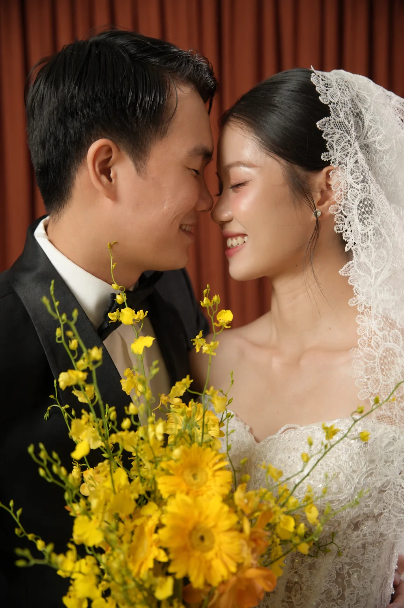
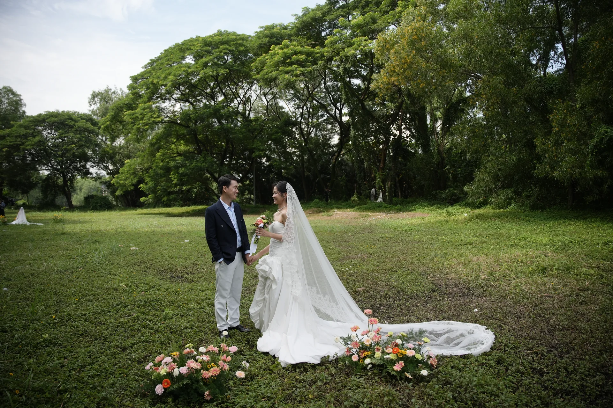

01 — LỄ VU QUYKhoảnh khắc
08:30
Khoảnh khắc
nên duyên.
Cùng gia đình nhà gái đón mừng Lễ vu quy, chúc phúc cho chúng mình trong ngày nên duyên.

TRÂN TRỌNG KÍNH MỜI
24 . 10 . 2026
VÕ XU · LÂM ĐỒNG01 / LỜI MỜI
Trân trọng kính mời bạn
đến chung vui Lễ vu quy cùng gia đình.
Thứ Bảy, 24.10.2026
VÕ XU · LÂM ĐỒNGOUR JOURNEY
02 / BỘ ẢNH CƯỚI
Wedding Memories24.10.2026
Những điều đẹp đẽ, ở lại cùng nhau.
02 / ẢNH BÀN
24 . 10 . 2026
Nhật Uyên & Đức Anh
CHUNG MỘT KHUNG HÌNH. CHUNG MỘT ĐỜI.03 / ALBUM CƯỚI
Nhật Uyên & Đức Anh
24 . 10 . 2026
Kéo để xoay · Bấm ảnh để xem trọn khung
Bộ ảnh cưới
HẸN BẠN VÀO NGÀY
THÁNG MƯỜI
2026Một ngày hạnh phúc.
Một đời bên nhau.
| T2 | T3 | T4 | T5 | T6 | T7 | CN |
|---|---|---|---|---|---|---|
| 1 | 2 | 3 | 4 | |||
| 5 | 6 | 7 | 8 | 9 | 10 | 11 |
| 12 | 13 | 14 | 15 | 16 | 17 | 18 |
| 19 | 20 | 21 | 22 | 23 | 24 | 25 |
| 26 | 27 | 28 | 29 | 30 | 31 |
MỖI KHOẢNH KHẮC, GẦN NHAU HƠN
Lễ vu quy 08:30 · Tiệc vu quy 10:30
Một lời hẹn. Một đời bên nhau.
04 / NGÀY CHUNG ĐÔI
08:30
Cùng gia đình nhà gái đón mừng Lễ vu quy, chúc phúc cho chúng mình trong ngày nên duyên.

10:30
Mời bạn dự tiệc vu quy, sẻ chia lời chúc và lưu lại những kỷ niệm cùng hai gia đình.

Đường đến ngày vui
06 / HẸN GẶP BẠN
Cảm ơn bạn đã là một phần trong ngày hạnh phúc của Nhật Uyên & Đức Anh.
Nhật Uyên & Đức Anh
Đến chung vui cùng chúng mình24 . 10 . 2026
HẸN BẠN VÀO NGÀY CHUNG ĐÔI